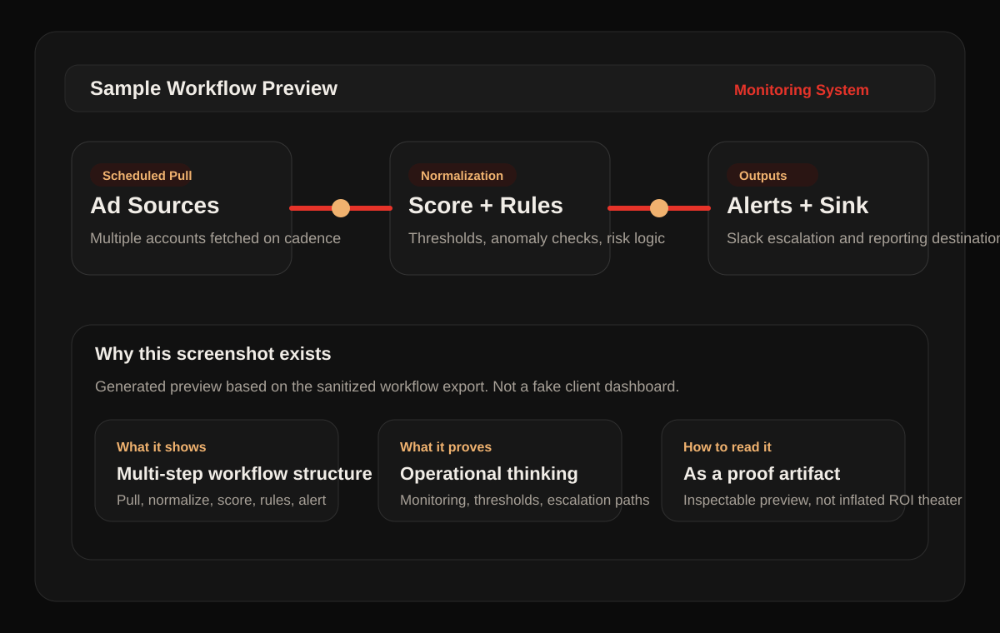
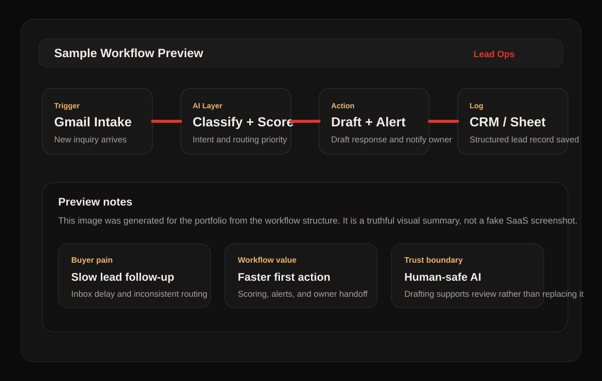
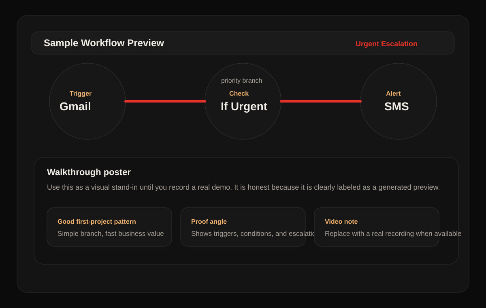

I build
custom n8n workflows
for agencies with manual ops drag
I help agencies automate lead handling, outbound operations, inbox workflows, and reporting systems
so your team moves faster without relying on manual triage, spreadsheet glue, or inbox habits.
Inbound qualification, routing, drafting, and follow-up support workflows
Outbound ops
Prospecting, approvals, and reply workflow support for agency outreach
Reporting
Monitoring, alerts, and recurring workflows built to reduce manual checking
Stack I work inside
n8n
OpenAI
Gemini
Gmail API
Slack
Google Sheets
REST APIs
Webhooks
ROI Opportunities
Where ROI usually shows up first
The fastest automation wins are usually not flashy. They come from removing repeat admin work,
reducing response lag, and making critical workflows more consistent.
Time Recovery
Manual triage, updates, and copy-paste work
Good candidates are workflows repeated daily by ops, sales, support, or founders.
Lead intake, qualification, and routing
Inbox sorting, drafting, and escalation
Reporting refreshes, alerts, and spreadsheet updates
Revenue Speed
Slow follow-up and handoff delays
When inbound demand sits in an inbox or spreadsheet, revenue opportunities decay before anyone acts.
Faster lead-to-owner assignment
More consistent follow-up logic
Clearer priority signals for hot accounts
Risk Reduction
Processes that break when one person is busy
Automation should reduce dependence on memory, heroics, and hidden manual steps.
Retries and alerts when a workflow fails
Documented logic instead of tribal knowledge
Manual fallback when AI confidence is low
Best fit for agencies already feeling workflow drag in lead handling, outbound execution, reporting, or inbox operations.
Core Services
Agency workflows designed around bottlenecks that slow delivery
I build custom n8n workflows around the tools your agency already uses,
with a focus on lead flow, outreach support, reporting visibility, and lower manual workload.
LR
Lead Routing Workflows
Capture, classify, score, and route inbound leads so high-intent opportunities do not sit in inboxes.
n8nGmailSlack
OB
Outbound Ops Workflows
Support sourcing, approvals, and reply flow so agency outreach runs with less manual coordination.
GeminiSheetsTelegram
RA
Reporting & Alert Systems
Automate monitoring, summaries, and alerts so reporting does not depend on repeated manual checks.
APIsSheetsSlack
CW
Custom n8n Workflow Builds
For one clear agency bottleneck that needs scoped implementation, better reliability, and cleaner handoff logic.
WebhooksREST APIsLogging
Start Here
Agency Workflow Audit + Build Direction
This is the easiest first step for an agency with one operational bottleneck worth fixing first.
You bring the workflow problem. I map the likely automation path, risks, systems involved, and the best first implementation scope.
What you get
Clear problem framing around one workflow worth fixing first
Recommended automation architecture and tool path
Main failure points, guardrails, and fallback considerations
Priority view on where ROI is most likely to show up first
Who this is for
Agencies already losing time every week to repetitive ops work
Teams with lead, inbox, reporting, or routing friction
Operators who need a scoped first system, not vague advice
Clients who care about reliability, not just a quick no-code build
What happens next
You send the bottleneck, current tools, and team context
I reply with a focused workflow plan and fit assessment
If the fit is strong, we scope the first implementation
If the fit is weak, you still leave with a clearer direction
Proof You Can Review
Proof you can inspect directly
This portfolio stays grounded in what is real today: workflow artifacts, system thinking, integration depth, and delivery discipline.
Inspectable artifacts
Sanitized workflow JSON exports you can open and review directly
Case studies with problem, system logic, and architecture flow
Public GitHub repo plus live portfolio copy that explains scope, fit, and risk clearly
What that proves
I can structure multi-step workflow logic, not just connect simple triggers
I think in routing, retries, alerts, fallback paths, and operational clarity
I can turn messy process problems into scoped implementation plans
What I can share on request
More walkthrough detail on how a workflow is structured end to end
Implementation thinking for a similar bottleneck in your business
A direct explanation of where automation value is real versus overstated
Evidence standard
Sample build means the workflow was built to demonstrate a real operational pattern
Sanitized export means sensitive client or account details were removed before sharing
No testimonials or ROI numbers are shown unless they can be verified and defended
What a buyer should infer
The workflow logic is inspectable instead of hidden behind vague claims
The delivery approach is conservative about reliability and edge cases
The person building the system can explain why each step exists
What this is not
Fake social proof, fake revenue claims, or anonymous “clients” that cannot be validated
A portfolio built around aesthetics with no workflow artifacts behind it
A promise that every process should be automated just because automation is possible
Why that matters
Serious clients want trustworthy judgment, not inflated claims
Honest proof lowers risk when the first project is being scoped
Clear boundaries usually attract better-fit clients and better projects
Case Studies
Agency workflow proof with clearer business framing
These are sanitized builds presented to show what changed operationally, how the system was structured, and where automation value can come from.

Monitoring preview
Generated from the workflow structure as a truthful visual artifact.

Lead ops preview
Shows intake, scoring, drafting, and logging in one agency-friendly workflow path.

Escalation walkthrough poster
A concise visual summary of the escalation path, alerting flow, and fallback logic.
Sample Build / Sanitized Export
Multi-Client AI Intelligence & Risk Monitoring System
Built an automation pipeline that normalizes ad data, scores performance,
detects anomalies, and sends risk alerts across multiple client environments.
What this proves
Problem: Campaign risk checks were manual, delayed, and inconsistent.
System: Centralized monitoring with automated scoring, alerts, and executive summaries.
ROI Lens: Less analyst time spent checking accounts manually and faster visibility when performance shifts.
A multi-step monitoring build with scoring, alerting, and reporting stages you can inspect directly
15 links
Connected stages that show this is a real workflow path, not a single-trigger demo
Cross-account
A standard monitoring structure instead of fragmented manual account checks
Sample Build / Sanitized Export
Email Lead Automation System
Created AI-assisted lead classification with automated routing, response drafting,
and hot-lead escalation to reduce lag between inbound inquiry and agency response.
What this proves
Problem: Inbound leads were handled manually with slow and inconsistent prioritization.
System: AI classification, lead scoring, routing logic, and CRM-ready logging.
ROI Lens: Less inbox delay, faster response to high-intent leads, and more consistent follow-up across the team.
This section stays grounded in what already exists today: poster-style previews, open workflow exports,
and case study copy that explains the logic, decision points, and fallback paths.
What you can inspect now
How each workflow is triggered, routed, and monitored
Where AI is used versus where deterministic logic is safer
How retries, alerts, and manual fallbacks are structured
Current walkthrough format
Poster previews stay available on the site
Workflow JSON remains open for direct inspection
Case study copy explains the business logic behind each build
Live walkthrough option
Reach out through the form for a guided live walkthrough
I can tailor the demo around a workflow similar to yours
The site stays honest about what is public, inspectable, and ready today
Delivery Process
Why this is lower-risk than hiring a generic automation freelancer
A clear delivery sequence reduces the usual failure modes: unclear logic, brittle integrations, no fallback path, and no idea how value will be measured.
01
Scope the Bottleneck
Define the business goal, the current manual cost, and the workflow that is worth automating first.
02
Map Logic Before Build
Branching logic, integration paths, AI decision points, and failure states are mapped before implementation.
03
Build for Reliability
Workflows, prompts, routing, and transformations are built with retries, logging, and sensible guardrails.
04
Test Edge Cases
Validate edge cases, failure handling, low-confidence AI output, and manual fallback with realistic scenarios.
05
Launch With Measurement
Deploy safely, monitor execution, and review whether the workflow is actually saving time or improving response speed.
FAQ
Questions serious clients usually ask before hiring
These are the objections that matter: fit, reliability, speed, and whether the workflow is valuable enough to automate.
What kinds of clients are the best fit?
The best fit is an agency with real workflow volume, repeated manual work, and a clear cost to delays or inconsistency.
Do you work on tiny one-off tasks?
Usually no. The strongest fit is a workflow that saves recurring time, improves response speed, or reduces execution risk, not a one-time admin task.
How do you avoid brittle automations?
By mapping logic before build, defining fallback paths, testing edge cases, and making retries, logging, and alerts part of the workflow instead of an afterthought.
Can you work with the tools we already use?
Yes, when the stack is a reasonable fit. Most projects involve some combination of n8n, Gmail, Sheets, Slack, webhooks, APIs, AI models, and CRM or database layers.
What should I send in the first message?
Describe the current workflow, where it breaks, who touches it, which tools are involved, and what delay or manual effort is costing the team today.
Get Started
Request a focused agency workflow audit
Send the workflow bottleneck. I will reply with a scoped automation direction, likely value areas, and the safest first build.
Best fit
An agency workflow your team is still handling manually
A lead, outreach, reporting, or inbox bottleneck
A process where faster execution would clearly help delivery or revenue
What you get in the audit reply
A recommended first workflow, the likely ROI angle, the systems involved, and the main delivery risks to watch.
Current stack
n8n, Gemini/OpenAI, Gmail, Google Sheets, Slack, APIs, webhooks, and custom workflow logic